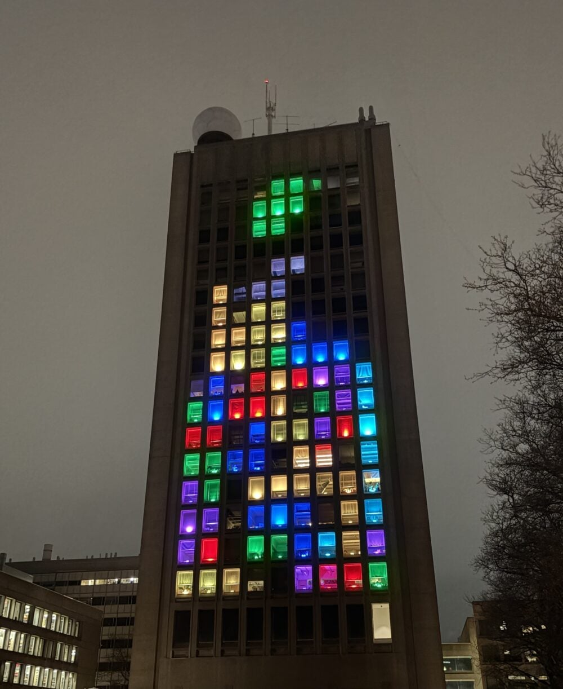
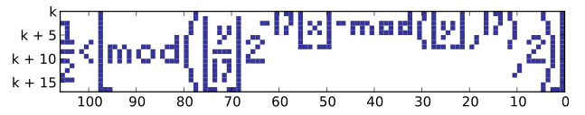

Table of Contents
See the sun in the day; watch the stars at night. (A Zen Forest, 773)
1 Introduction
1.1 Roads to wonder
The universe is huge, ancient, and marvelously strange. But the greatest miracle of all is that it is knowable. Our knowledge may be fragmentary and often plain wrong; that is the basic predicament of science. But it makes it no less miraculous that we can unravel the biological blueprint of a daffodil, land a robot on the red sands of Mars, or hear the faint chirp of black holes colliding, in the depths of space, a billion years ago. There is awe and beauty and cosmic providence in this. This book is written from the conviction that awe, beauty, and providence are almost entirely missing from our curricula. We teach the wrong things, using the wrong methods, for the wrong reasons. The outcome is, of course, deeply wrong.
Let me elaborate. If students learn to reproduce known results by rote, they will take both the methods and the results for granted. Of course gravity obeys an inverse square law! It’s obvious. But why? What assumptions does this depend on? What else might obey an inverse square law, and what happens if it doesn’t? They neither know nor care because they are taught not to. In the same vein, when we assess mastery by trivial variations on known things, students come to identify mastery with trivial variation. After variation number 173, they will resent this “mastery” and see it for the sham that it is. No wonder so many people are proud to be bad at math! Worst of all, students learn to mask their ignorance. There is no better way to discourage a love of play and a taste for the unknown than by labelling questions “stupid”, and rewarding those who “fake it till they make it”. Or, more realistically, simply go on faking.
If formal education kills this sense of awe and beauty with military efficiency, where can it be found? If you’re lucky, the rigors of graduate school. A better bet is to pick a volume at random from the popular science section at your local bookstore. Here you will find the universe described in loving wonder, and the greater portion of that wonder reserved for the unknown itself. There are no tests, no pointless variations, and best of all, no such thing as a stupid question. The whole premise of the genre is that the reader doesn’t know! They can dip in, explore, play around, have fun, and remain a non-expert at the end of day, free to admit their ignorance and keep asking. If they fake it, the only person they deceive is themselves. School does not work this way, and when teachers make the same quip about cheating, they are neglecting the systemic realities—the hoops to jump through, the boxes to tick, all those perverse incentives to fake it—that they help maintain. The day that cheating is unnecessary, there will be no cheating. AI complicates the situation only marginally; cheating remains a matter of assessment design and structural incentive.
So, this is not a textbook, nor is it a manual, a manifesto or a monograph. I have no interest in replacing one rigidity with another. Instead, it is an invitation to ask stupid questions, and to learn about the universe with a spirit of play and wonder. I take inspiration from hacker culture, not the digital intruders and electoral trolls that “hacker” suggests to the modern ear, but an older, nobler tradition growing out of places like MIT, Bell Labs, and the open-source software movement. In the words of open-source gnuru Richard Stallman:
What [hackers] had in common was a love of excellence and programming. They wanted to make the programs that they used be as good as they could. They also wanted to make them do neat things. They wanted to be able to do something in a more exciting way than anyone believed possible and show ‘Look how wonderful this is. I bet you didn’t believe this could be done.’
Stallman is articulating here a broad ethos of play, excellence, and creativity. Put simply, the idea is to do cool things in cool ways. That’s how we can learn and have fun at the same time, activities no longer at odds, but combined and harmonized to the point they become indistinguishable. To paraphrase L. P. Jacks, a hacker
. . . simply pursues their vision of excellence at whatever they do, leaving others to decide whether they are working or playing. To them, they are always doing both.
When Google co-founder Larry Page built a working inkjet printer out of Lego, or MIT pranksters transformed a campus building into a giant version of Tetris, were they working or playing? The answer is both; they were hacking, so the distinction is irrelevant.

Figure 1: The Green Building of MIT, transformed into a game of Tetris (2026).
This philosophy goes well beyond programming. One of the great avatars of hacker spirit is Richard Feynman, a physicist who won the Nobel Prize for co-inventing quantum electrodynamics, but had a history of hopping between different areas and doing amazing things wherever he landed. He gave this advice to an aspiring scientist:
Study hard what interests you the most in the most undisciplined, irreverent and original manner possible.
This is a terrible recipe for conventional academic success, which usually requires studying hard what interests us not at all, in a disciplined and reverent fashion along well-trodden paths. But Feynman had no time for convention, and followed his own advice. In his autobiography, he describes the fruits of his policy of free and creative exploration:
Why did I enjoy [physics]? I used to play with it. I used to do whatever I felt like doing — it didn’t have to do with whether it was important for the development of nuclear physics, but whether it was interesting and amusing for me to play with. . . It was easy to play with these things. It was like uncorking a bottle: Everything flowed out effortlessly. I almost tried to resist it! There was no importance to what I was doing, but ultimately there was. The diagrams and the whole business that I got the Nobel Prize for came from that piddling around with the wobbling plate.
The plate, here, is one that Feynman saw wobbling oddly when thrown in the Cornell cafeteria. He sat down, figured out the wobble, and was led, step by associative step, to a Nobel Prize. Working and playing go together.
1.2 Hack value
Hacker culture is organized around discrete units called hacks. A hack is more than a record of play, or mere cleverness, or even creative flair. It is play condensed by technical wit, and like a good joke, has an element of surprise or shortcut. A brilliant example is Tupper’s self-referential formula. Consider the inequality
$$ \frac{1}{2} < \left\lfloor \text{mod}\left(\left\lfloor\frac{y}{17}\right\rfloor 2^{-17\lfloor x\rfloor} - \text{mod}(\lfloor y\rfloor, 17), 2\right) \right\rfloor, $$
where \(\lfloor x\rfloor\) indicates the integer part of the number \(x\), and \(\text{mod}(a, b)\) is the remainder after we divide \(a\) by \(b\). Don’t worry if this doesn’t make sense; the details are unimportant. What is important is that if we color blue the pairs of integers \((x, y)\) on the plane that satisfy the inequality, with \(x\) increasing to the left and \(y\) increasing downwards, we find a dot-to-dot of Tupper’s formula itself!

Figure 2: Tupper’s formula graphing itself.
It would spoil the joke to explain how it works. Here's a hint: Tupper found a way to encode all bitmaps. But the point here is that play and technical excellence are condensed into a move that, like a joke, amuses, surprises, or provokes us.
In contrast, thoughts which are serious, specialized, deep and difficult, which take hundreds of pages to explain or a PhD to understand, are not really hacks. Andrew Wiles’ proof of Fermat’s Last Theorem, for instance, involves creative insight and technical cleverness on a level unimaginable for most of us. It is precisely this unimaginability that makes it hard to share at the pub or during a departmental coffee break. And like jokes, hacks are memes, designed to be socially distributed and mutually enjoyed. What’s the point if you can’t talk about it?
These qualities of shareability and mutual enjoyment contribute to what is called the hack value, a term which actually predates “hack”, and from which “hack” is formed. Just like humor, hack value is hard to define, but perhaps the most important component is leverage, which (analogous to mechanical leverage) we can define as the ratio of end result to the means used:
$$ \text{hack value} = \frac{\text{ends}}{\text{means}}. $$
This tells us why, unlike Andrew Wiles, hackers do not look for the most powerful, or obvious, or easy tool for the job. They delight in the unexpected, in using humble means to achieve extraordinary ends. And a great hack demands to be shared because it empowers the user, leading to that apotheosis of wonder and hacker spirit captured by Stallman:
Look how wonderful this is. I bet you didn’t believe this could be done.
Viewed this way, hacker culture is a celebration of human wit and ingenuity, of our ability to creatively overcome technical limitation and share that triumph in the form of memes.
1.3 This book
But with a mild tweak, it becomes a celebration of cosmic providence:
Look how wonderful this is. I bet you didn’t believe this could be true.
What if, instead of hacking inkjet printers, campus buildings, or bitmaps, we hack the universe itself? If, like Feynman, we piddle around with wobbling plates and see where it leads us?
That is the goal of this book. We will play seriously, and develop high-leverage, low-tech hacks which take us beyond the colorful language of pop science. Using high school algebra, we will hack our way to nuclear explosions, tidal waves, turbulence, bacterial genetics, aliens, life expectancy, light bulbs, dark energy, black holes, and much more besides, ending with some of the deepest unsolved problems in physics. There will be no stupid questions or incentives to fake. There will be awe. There will be beauty. And most of all, it will be a lot of darn fun.
There is a secondary incentive. In an age where scientific achievement is becoming the province of frontier AI models, it is a small, humanistic act of rebellion to show people that they can learn without a data centre, and by expending only the tokens of mental effort. Our computer will be a napkin, and the sole inputs to our computation experimental facts discovered by other humans. We will try, as armchair explorers, to limit our reliance on such external facts, and deduce from first principles as frequently as possible. This is not to detract from AI; I am not a luddite, but rather a thoughtful enthusiast. But there should remain some space for exclusively human science, not because this is best for science, but because it is best for human flourishing.
So, onto the prerequisites. This book assumes some pre-calculus mathematics and basic exposure to science:
- High school algebra: index laws, how to isolate variables, and how to solve simultaneous linear equations;
- Trigonometry: the definition of sine, cosine and tangent, special triangles, and the relation between trigonometric functions and the unit circle;
- Physics: scientific notation, one-dimensional kinematics, Newton's universal law of gravitation, kinetic and potential energy, basic rotational motion.
Everything else we will introduce as needed. Ready?